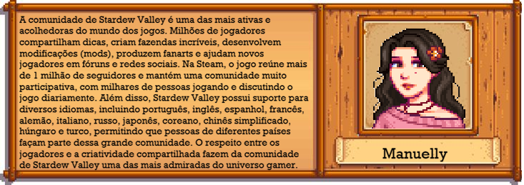
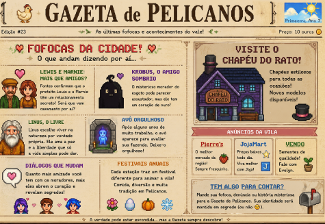

🍎Site Oficial do Stardew Valley
🍎Discord Oficial
🍎Reddit Oficial
🍎Stardew Valley na Steam
🍎Twitter do Criador
🍎Facebook do Criador
🍎Youtube do Criador
O que é Stardew Valley?
Stardew Valley é um jogo eletrônico independente (indie) de simulação de fazenda e RPG, criado pelo desenvolvedor norte-americano Eric Barone, conhecido pelo pseudônimo ConcernedApe. O jogo foi lançado em 26 de fevereiro de 2016 e foi desenvolvido quase inteiramente por uma única pessoa, incluindo a programação, a arte, a música e a história.
Na história, o jogador herda a antiga fazenda de seu avô, localizada no Vale do Orvalho (Stardew Valley). A partir daí, deve cultivar plantações, criar animais, pescar, minerar, coletar recursos e interagir com os moradores da cidade da Vila Pelicanos. Também é possível fazer amizades, participar de festivais, casar-se e formar uma família.
Desde seu lançamento, Stardew Valley recebeu diversas atualizações gratuitas que adicionaram novos conteúdos, áreas exploráveis, eventos, opções de personalização e melhorias na jogabilidade. A atualização 1.6, lançada em 2024, foi uma das maiores já recebidas pelo jogo, trazendo novos festivais, itens, fazendas e várias melhorias para os jogadores.
A duração da gameplay varia bastante, pois o jogo não possui um final obrigatório. A história principal pode ser concluída em cerca de 50 a 80 horas, mas muitos jogadores ultrapassam facilmente 100 ou até 200 horas de jogo devido à grande quantidade de atividades disponíveis e à liberdade para evoluir a fazenda no próprio ritmo.

Curiosidades extras: 1.O mod mais procurando pelos jogadores é o que permite casar com uma personagem CASADA, no caso a Robin,a carpinteira da vila que origalmente é casada com Demetrius,o cientista da amada Vila Pelicanos.
2.Os fãs teorizam que Abigail,"a filha do Pierre" com a Caroline na verdade seria fruto de uma traição,sendo Abigail na verdade filha do Mago da torre que tem a mesma cor de cabelo que ela.(infelizmente isso é desmintido dentro do proprio jogo quando nos é mostrado que Abigail so pinta o cabelo.)
3.O segundo mod mais procurando é um que também permite o jogador casar com uma mulher CASADA, so que dessa vez é a propria Caroline que ja foi citada.(suspeito demais essa historia).